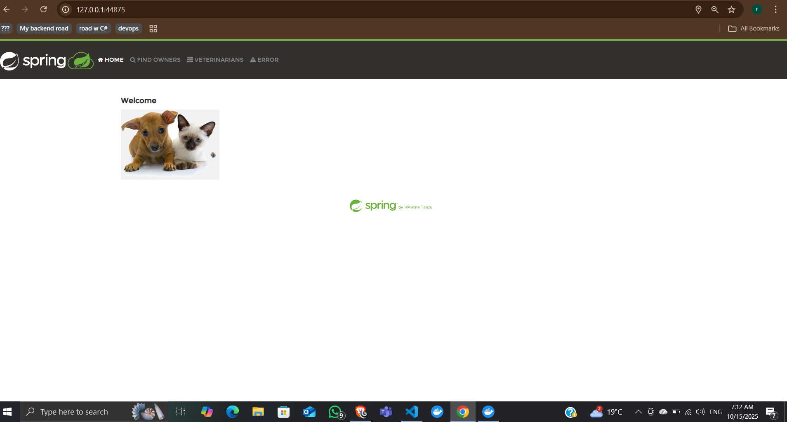
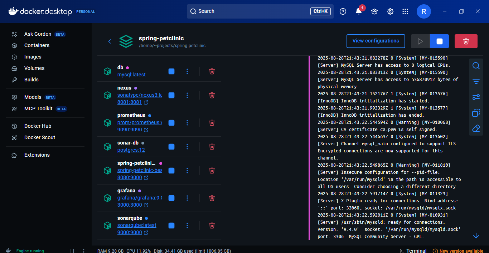

DevOps Project — Spring PetClinic
 Highlights
- Containerized with Docker and orchestrated with Docker Compose
- Automated configuration via Ansible
- Provisioned AWS infra with Terraform
- Monitoring via Prometheus and Grafana
- Continuous code quality with SonarQube
- Deployed on AWS
- Deployment replication with Kubernetes
- CI/CD pipeline with GitHub Actions and Jenkins
DockerKubernetesAWS
PrometheusGrafanaAnsible
TerraformSonarQube